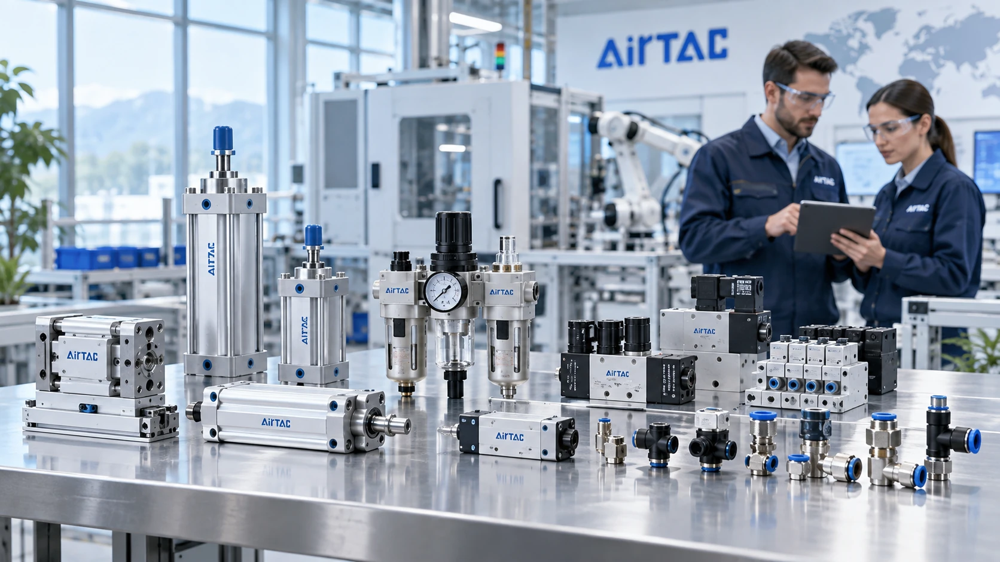
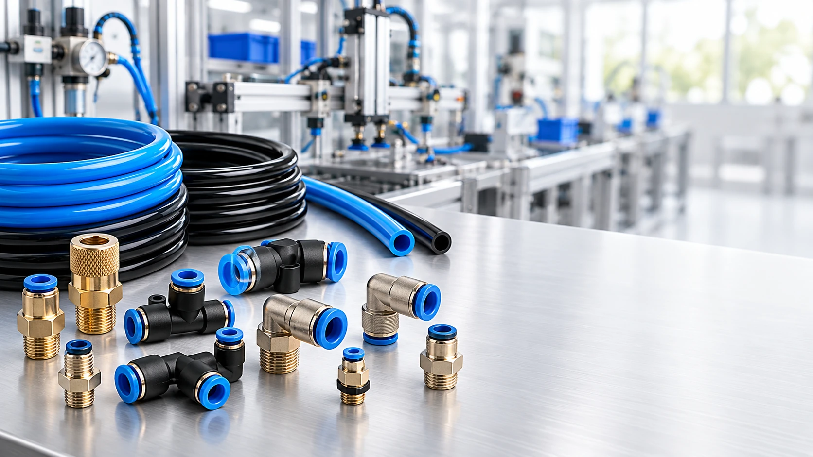

Nhà cung cấp AirTAC Việt Nam cho nhà máy và OEM
Fast Group Engineering cung cấp AirTAC chính hãng cho nhà máy, OEM và đội bảo trì tại Việt Nam, hỗ trợ báo giá theo mã hàng và chứng từ theo lô.
Nội dung hỗ trợ đội mua hàng và kỹ thuật chọn đúng sản phẩm AirTAC, chuẩn bị RFQ và yêu cầu chứng từ phù hợp.
Các bài viết tập trung vào cách chọn mã, nhóm sản phẩm thường gặp và thông tin cần gửi để Fast Group báo giá nhanh.

Fast Group Engineering cung cấp AirTAC chính hãng cho nhà máy, OEM và đội bảo trì tại Việt Nam, hỗ trợ báo giá theo mã hàng và chứng từ theo lô.
Van điện từ AirTAC là nhóm có nhiều biến thể dễ nhầm nhất: cùng series nhưng khác điện áp coil, cổng ren, trạng thái trung tâm hoặc manifold.
Với xi lanh và cơ cấu chấp hành, kích thước lắp và phụ kiện quan trọng không kém tên series.
FRL là lớp bảo vệ đầu nguồn cho van, xi lanh và cụm chấp hành. Chọn sai lưu lượng hoặc cấp lọc có thể gây tụt áp hoặc giảm tuổi thọ thiết bị.

Fitting và ống khí quyết định độ kín, tốc độ đáp ứng và độ gọn của tủ khí nén. Nhầm chuẩn ren hoặc đường kính ống là lỗi rất thường gặp.
Fast Group hỗ trợ báo giá AirTAC theo part number, BOM, ảnh tem hoặc yêu cầu thay thế; đồng thời chuẩn bị VAT, CO/CQ và hồ sơ theo điều kiện từng đơn hàng.
Gửi mã AirTAC, số lượng, ảnh tem hoặc BOM để Fast Group kiểm tra cấu hình.
Gửi RFQ AirTAC